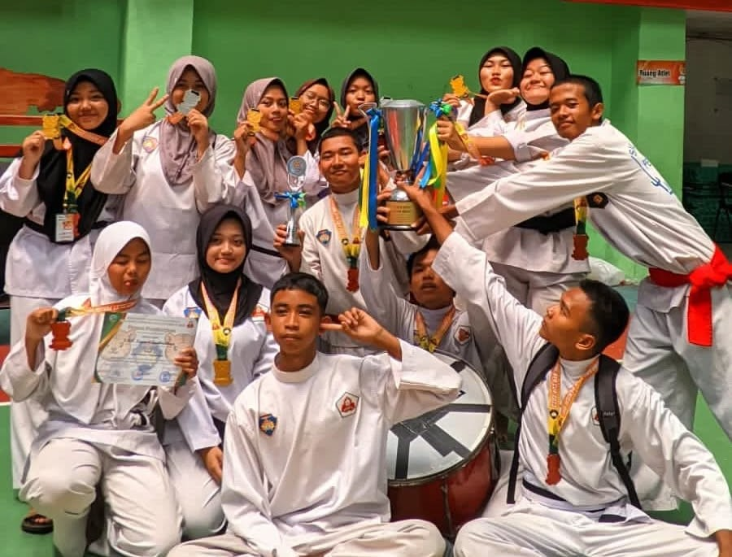

Prestasi

Juara 1
LKS Otomotif Tingkat Kota Tasikmalaya Bidang Lomba Motorcyrcle Repair & Maintenance

Juara Umum 2
Tingkat SLTA Pada Kejuaraan Silat Perisai Diri Wali Kota Tasikmalaya Cup Tahun 2023

Juara 3
Atletik (Panca Lomba) Putra O2SN SMK Tingkat Jawa Barat 2024.